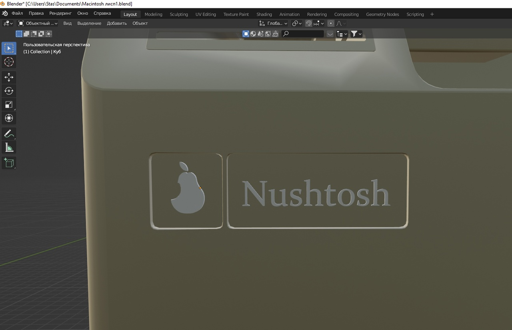
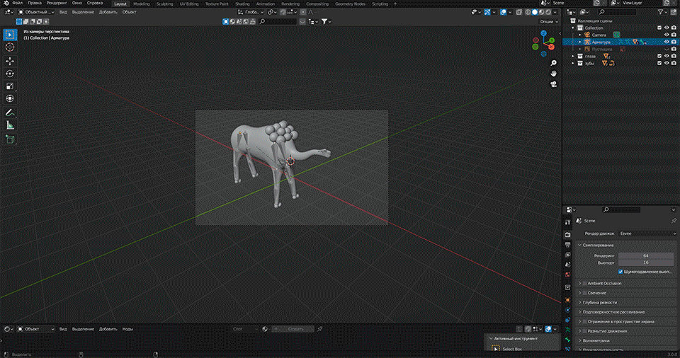

Lisp Alien
You must have JavaScript enabled to display the content in this note correctly
Once upon a time I stumbled upon a Lisp Alien 3D Model, I thought I wanted the same one, but more elaborate and with more detail accuracy.
As time went on, the idea also remained somewhere in the depths of memory.
And recently, my friend told me that he began to get involved in 3D modeling. I thought this was my chance to bring my old idea to life. We consulted with him a bit, discussed the details, as well as how the final model should look, and he agreed to take on this project.
During the implementation of the project, it was very interesting to watch how the model develops, new details appear in it, a soul appears. From the very beginning, we wanted to make only an alien, and it will stop there.
But then we decided to add various new details to it:
- the pedestal on which he will stand
- flag
- sword and shield
- brain model inside an alien… don't ask why…
- retro computer
It turned out funny with the computer model, we took the old Macintosh as a basis, and slightly changed its name to Nushtosh (Russian speakers will appreciate the joke):

A small cut of the moments of creation can be seen in this animation:

It was a very interesting and fun project, the result of which we were pleased with.
Lisp Alien 3D model (you can twist and see):
The pedestal 3D model (you can twist and see):
Ready-made renders that can be put on the desktop wallpaper:


All files from this note can be found here.